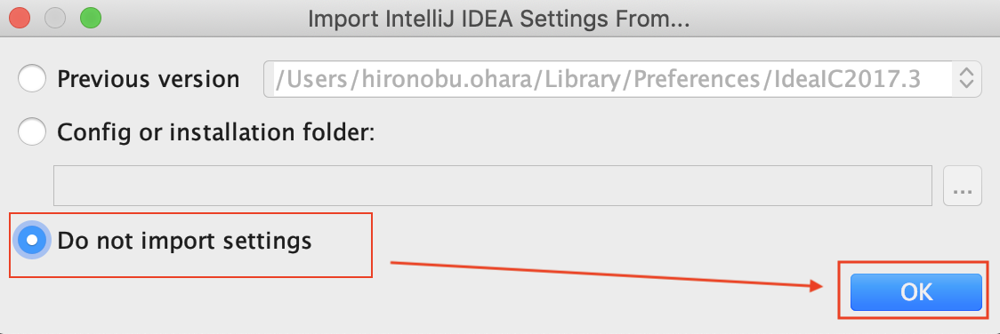
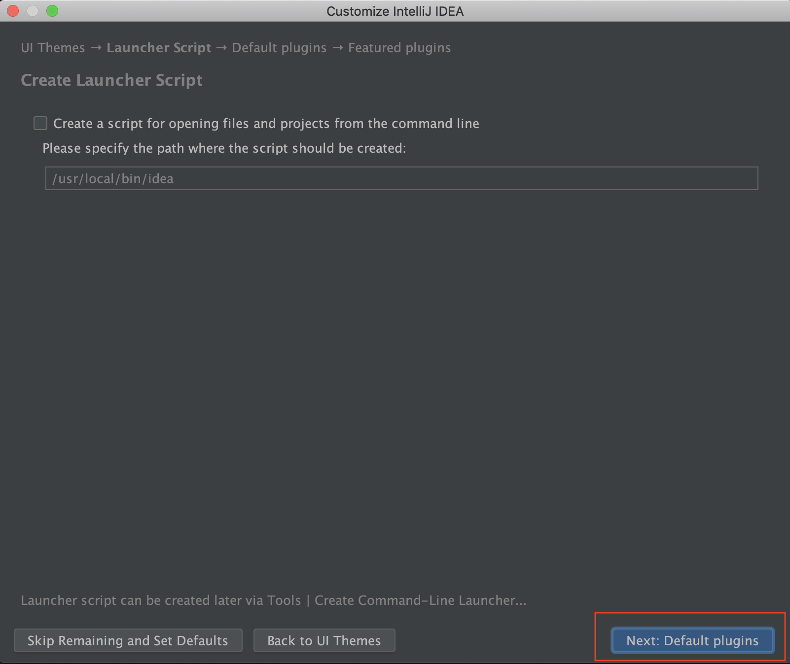
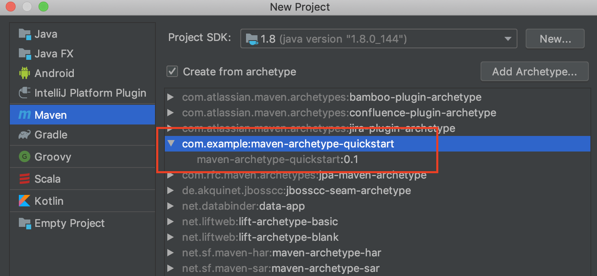

開発環境構築について
はじめに
Alibaba Cloud SDKはGo、Node.js、RUSH、など幅広い分野に展開されていますが、AlibabaCloudのBigDataプロダクトはScala/Java/Pythonを主に利用します。 そのため、本章ではローカルのMac OS上でPython及びPlayFrameworkの開発を開始するための環境構築手順について記載します。
環境
Mac OS Mojave (10.14.x）
Homebrew
Homebrewの導入
Mac用パッケージ管理ソフト Homebrew をインストールします。 Homebrew（ホームブルー）は、macOSオペレーティングシステム上でソフトウェアの導入を単純化するパッケージ管理システムのひとつです。 Homebrewを導入することで、Pythonの構築など、後の導入が楽になります。
Homebrewのインストール
ターミナルを開いてHomebrew公式サイト に書かれている以下コマンドを実行します。 画面の指示に従ってキーやパスワード入力して、しばらく待つとインストールが終わります。
$ /usr/bin/ruby -e "$(curl -fsSL https://raw.githubusercontent.com/Homebrew/install/masterHomebrewのインストール確認
以下コマンドでHomebrewが無事インストールできたかを確認します。
$ brew doctor
ターミナルに以下が表示されれば完了です。 > Your system is ready to brew.
Homebrewの更新
brewコマンドでパッケージをインストールしたものの、目的のバージョンがないときは、brewのバージョンが古い可能性がありますので、以下コマンドで更新チェックをします。
$ brew update
Python開発環境構築
- PyCharm
- JetBrains社製のPython用IDE（統合開発環境）
- 無償版（Community Edition）と有償版（Ultimate Edition）があり、有償版はDjangoなどのWebフレームワークをサポートしています。 ※無償版でも十分実用的なため今回は無償版を利用します
pyenv導入
pyenvは1台のPC内でPythonの異なるバージョンを切り分け、管理するためのツールです。例えば、Python2.7と3.6混合で利用したい場合は、pyenvが非常に役立ちます。 ターミナル上で以下コマンドを使ってpyenvをインストールします。
$ brew install pyenv
ターミナルで以下コマンドを実行し、pyenvのフォルダにPATHを通します。
$ echo 'export PATH="~/.pyenv/shims:$PATH"' >> ~/.bash_profile
$ echo 'if which pyenv > /dev/null; then eval "$(pyenv init -)"; fi' >> ~/.bash_profile
$ source ~/.bash_profile
あとはpyenvを通じて、インストールしたいバージョンを指定してインストールします。
$ pyenv install --list
# ここで pyenvとしてインストール可能なリストがでます。
# 今回はPython 3.7.3を入れたいので、 3.7.3を選択します>
$ pyenv install 3.7.3あとは使用したい状況に合わせてバージョンを切り替えるだけです。
$ python --version
Python 2.7.16
$ pyenv versions
* system (set by /Users/hironobu.ohara/.pyenv/version)
3.6.3
3.7.3
$ pyenv global 3.7.3
$ pyenv versions
system
3.6.3
* 3.7.3 (set by /Users/hironobu.ohara/.pyenv/version)
$ PyCharmダウンロード＆インストール
PyCharmのダウンロードページ にアクセスし、Community版をダウンロードします。 https://www.jetbrains.com/pycharm/ そのあとはダウンロードされたdmgファイルを開き、インストールすれば完了です。 また、PyCharmのオプションとして、以下の設定を推奨します。 * 行番号を表示 * PEP8のコーディング規約に準拠
Play Framework開発環境構築
Java(JDK)、Play Framework、IntelliJ IDEAを導入します。
JDKのインストール
OracleのJDKダウンロードページからMac向けJDKをダウンロードします。
https://www.oracle.com/java/technologies/javase-java-archive-javase8-downloads.html
※(Java10ではIntelliJ IDEAが動かないため注意)
そのあとはダウンロードされたdmgファイルを開き、インストールすれば完了です。

インストール完了後、ターミナルでJavaのバージョン確認コマンドを実行し、以下のような表示になればOKです。
$ java -version
java version "1.8.0_144"
Java(TM) SE Runtime Environment (build 1.8.0_144-b01)
Java HotSpot(TM) 64-Bit Server VM (build 25.144-b01, mixed mode)Play Frameworkのインストール
Play Frameworkは「Javaのフレームワーク」です。Javaのライブラリだけでなく、Scalaという言語をサポートしています。 ScalaはJava仮想マシン上で動くスクリプト言語です。Javaの文法と似つつ、Javaをベースとしたオブジェクト指向言語の上に、関数型の機能を表現しているため簡単にコーティングできることが特徴です。 さてsbt、scala用のbuildツールをインストールします。
$ brew install sbtインストール完了後、以下コマンドを実行します。これでscala対話型コマンドが出たらインストール成功です。
$ sbt console
[warn] No sbt.version set in project/build.properties, base directory: /Users/hironobu.ohara/Dev/bigdata_tech
[info] Set current project to bigdata_tech (in build file:/Users/hironobu.ohara/Dev/bigdata_tech/)
[info] Updating
https://repo1.maven.org/maven2/org/scala-lang/scala-library/2.12.8/scala-library-2.12.8.pom
100.0% [##########] 1.6 KiB (804 B / s)
[info] Resolved dependencies
[info] Updating
https://repo1.maven.org/maven2/org/scala-lang/scala-compiler/2.12.8/scala-compiler-2.12.8.pom
100.0% [##########] 2.2 KiB (8.6 KiB / s)
〜〜〜
[info] Non-compiled module 'compiler-bridge_2.12' for Scala 2.12.8. Compiling...
[info] Compilation completed in 7.941s.
[info] Starting scala interpreter...
Welcome to Scala 2.12.8 (Java HotSpot(TM) 64-Bit Server VM, Java 1.8.0_144).
Type in expressions for evaluation. Or try :help.
scala>
| => bigdata_tech / Compile / compileIncremental 0s
scalaでちょっと試してみます。何が対話型なのかみてみましょう。

また、scalaの対話型を終了するときはsys.exitで終了します。
$ sys.exitIntelliJ IDEAのダウンロード＆インストール
IntelliJとは、Java言語など多言語対応の統合開発環境です。
IntelliJ IDEAのダウンロードページ にアクセスします。
https://www.jetbrains.com/idea/download/

Community版をダウンロードします。

ダウンロードされたdmgファイルを開き、appファイルをApplicationsフォルダへDragします。

アプリケーションフォルダにて、IntelliJ IDEA CE.appを開きます。

今回は初期インストールなので、「Do not import settings」を選定します。

UIは好きに選定します。

何も選択せずに、Nextをクリックします。

今回は何も選択せずに、Nextをクリックします。

scalaのpluginをクリックしインストールします。

これでインストールは完了です。

再起動後、起動画面で「Create New Project」をクリックし、次の画面のようになっていればインストールは成功です。

<参考>IntelliJ IDEAでおすすめ設定
IntelliJ IDEAは便利なIDE綜合開発環境です。これをさらに快適な開発環境へ整えるために、行数追加とか、様々な設定を入れます。ここは著者のおすすめ設定を入れてみます。方法としては以下の通りです。
メニューバーの [IntelliJ IDEA] > [Preferences] から設定します。

Editor > General
Strip trailing spaces on Save: Modified Lines : 変更した行の末尾のスペースを除去します。
Always keep trailing spaces on caret line :Reformat Code時に空白のみの行を残します。
Ensure line feed at file end on Save : 保存時にファイル末尾に改行が入ります。
Show quick documentation on mouse move Delay (ms): 500 : クラスやメソッドにカーソルを合わせるとJava docがホバー表示されます。

Editor > General > Auto Import
Optimize imports on the fly (for current project) : 自動でインポートの最適化を実施

Editor > General > Apperence
Show line numbers : 行番号を表示
Show method separators : メソッド区切り線を表示
Show whitespaces (Leading/Inner/Trailing) : スペースを表示

Mavenのインストール
mavenはPOM（Project Object Model)に基づいたプロジェクトのビルド、テスト、ドキュメンテーション、配信など、プロジェクトのライフサイクル全体を管理するものです。
以下はmavenのコマンドとアーキテクチャ全体図です。

さて、コマンドラインの方にmavenをインストールしてみます。
$ brew install maven無事インストールできてるか確認します。
$ mvn -v
Apache Maven 3.6.2 (40f52333136460af0dc0d7232c0dc0bcf0d9e117; 2019-08-28T00:06:16+09:00)
Maven home: /usr/local/Cellar/maven/3.6.2/libexec
Java version: 1.8.0_144, vendor: Oracle Corporation, runtime: /Library/Java/JavaVirtualMachines/jdk1.8.0_144.jdk/Contents/Home/jre
Default locale: ja_JP, platform encoding: UTF-8
OS name: "mac os x", version: "10.14.5", arch: "x86_64", family: "mac"
$
これでmavenのインストール完了です。
ここで注目したいのが、Maven home: /usr/local/Cellar/maven/3.6.2/libexecという行です。IntelliJ IDEAでもmaven環境と連携しますので、IntelliJ IDEAのmavenホームディレクトリとして設定する必要があります。
[IntelliJ IDEA]>[Preferences]からmavenのホームディレクトリを設定します。

では軽くmavenをやってみます。mavenを使ってHellow Worldを表示してみたいと思います。
mavenコマンドmvnを1つ実行するだけで、Hellow Worldプログラムのソースファイルとテストファイルが自動で生成されます。
Maven Projectの作成
以下のMavenコマンドを実行すると、Java Projectが作成されます。
$ mvn archetype:generate \
-DarchetypeGroupId=<archetype-group-id> \
-DarchetypeVersion=<archetype-version> \
-DarchetypeArtifactId=maven-archetype-quickstart \
-DinteractiveMode=false \
-DgroupId=<group-id> \
-DartifactId=<project-name>例えば <group-id> をcom.example、 <project-name> を helloworld とする場合は、以下のコマンドとして実行になります。
$ mvn archetype:generate \
-DarchetypeGroupId=com.example \
-DarchetypeVersion=0.1 \
-DarchetypeArtifactId=maven-archetype-quickstart \
-DinteractiveMode=false \
-DgroupId=com.example \
-DartifactId=helloworldこのmvn archetypeを実行すると、ディレクトリ、ファイルが生成されます。生成される構成は以下の通り。
$ tree helloworld
helloworld
├── pom.xml
└── src
├── main
│ └── java
│ └── com
│ └── example
│ └── App.java
└── test
└── java
└── com
└── example
└── AppTest.java
9 directories, 3 filesMaven Projectのコンパイル、実行
作成したprojectフォルダのトップディレクトリ(上記の例であれば、helloworldディレクトリ)へ移動し、コンパイルするとsrcディレクトリ配下のソースファイルがコンパイルさレます。
$ cd helloworld
$ pwd
/Users/hironobu.ohara/Dev/maven/helloworld
$
$ ls
total 8
drwxr-xr-x 4 hironobu.ohara staff 128B 9 1 14:51 src
drwxr-xr-x 4 hironobu.ohara staff 128B 9 1 14:51 .
-rw-r--r-- 1 hironobu.ohara staff 644B 9 1 14:51 pom.xml
drwxr-xr-x 5 hironobu.ohara staff 160B 9 1 14:51 ..
$
$
$ mvn compile
[INFO] Scanning for projects...
[INFO]
[INFO] -----------------------< com.example:helloworld >-----------------------
[INFO] Building helloworld 1.0-SNAPSHOT
[INFO] --------------------------------[ jar ]---------------------------------
[INFO]
[INFO] --- maven-resources-plugin:2.6:resources (default-resources) @ helloworld ---
[WARNING] Using platform encoding (UTF-8 actually) to copy filtered resources, i.e. build is platform dependent!
[INFO] skip non existing resourceDirectory /Users/hironobu.ohara/Dev/bigdata_tech/maven/helloworld/src/main/resources
[INFO]
[INFO] --- maven-compiler-plugin:3.1:compile (default-compile) @ helloworld ---
[INFO] Changes detected - recompiling the module!
[WARNING] File encoding has not been set, using platform encoding UTF-8, i.e. build is platform dependent!
[INFO] Compiling 1 source file to /Users/hironobu.ohara/Dev/bigdata_tech/maven/helloworld/target/classes
[INFO] ------------------------------------------------------------------------
[INFO] BUILD SUCCESS
[INFO] ------------------------------------------------------------------------
[INFO] Total time: 1.324 s
[INFO] Finished at: 2019-09-01T14:54:22+09:00
[INFO] ------------------------------------------------------------------------
$ ls
total 8
drwxr-xr-x 4 hironobu.ohara staff 128B 9 1 14:54 target
drwxr-xr-x 5 hironobu.ohara staff 160B 9 1 14:54 .
drwxr-xr-x 4 hironobu.ohara staff 128B 9 1 14:51 src
-rw-r--r-- 1 hironobu.ohara staff 644B 9 1 14:51 pom.xml
drwxr-xr-x 5 hironobu.ohara staff 160B 9 1 14:51 ..
$トップディレクトリ配下にtargetディレクトリが作成され、その配下に class file が生成されます。
$ pwd
/Users/hironobu.ohara/Dev/maven/helloworld
$ tree .
.
├── pom.xml
├── src
│ ├── main
│ │ └── java
│ │ └── com
│ │ └── example
│ │ └── App.java
│ └── test
│ └── java
│ └── com
│ └── example
│ └── AppTest.java
└── target
├── classes
│ └── com
│ └── example
│ └── App.class
└── maven-status
└── maven-compiler-plugin
└── compile
└── default-compile
├── createdFiles.lst
└── inputFiles.lst
17 directories, 6 filesあとはトップディレクトリで以下のコマンドを実行すれば、コンパイルしたclassファイルが実行できます。
$ java -cp target/classes/ com.example.App
Hello World!Maven Projectのテスト
mavenで開発したProjectをテストします。作成したprojectフォルダのトップディレクトリ(上記の例であれば、helloworldディレクトリ)へ移動し、以下コマンドを実行すれば、Junitテストが実行されます。
$ mvn test
[INFO] Scanning for projects...
[INFO]
[INFO] -----------------------< com.example:helloworld >-----------------------
[INFO] Building helloworld 1.0-SNAPSHOT
[INFO] --------------------------------[ jar ]---------------------------------
[INFO]
[INFO] --- maven-resources-plugin:2.6:resources (default-resources) @ helloworld ---
[WARNING] Using platform encoding (UTF-8 actually) to copy filtered resources, i.e. build is platform dependent!
[INFO] skip non existing resourceDirectory /Users/hironobu.ohara/Dev/bigdata_tech/maven/helloworld/src/main/resources
[INFO]
[INFO] --- maven-compiler-plugin:3.1:compile (default-compile) @ helloworld ---
[INFO] Nothing to compile - all classes are up to date
[INFO]
[INFO] --- maven-resources-plugin:2.6:testResources (default-testResources) @ helloworld ---
[WARNING] Using platform encoding (UTF-8 actually) to copy filtered resources, i.e. build is platform dependent!
[INFO] skip non existing resourceDirectory /Users/hironobu.ohara/Dev/bigdata_tech/maven/helloworld/src/test/resources
[INFO]
[INFO] --- maven-compiler-plugin:3.1:testCompile (default-testCompile) @ helloworld ---
[INFO] Changes detected - recompiling the module!
[WARNING] File encoding has not been set, using platform encoding UTF-8, i.e. build is platform dependent!
[INFO] Compiling 1 source file to /Users/hironobu.ohara/Dev/bigdata_tech/maven/helloworld/target/test-classes
[INFO]
[INFO] --- maven-surefire-plugin:2.12.4:test (default-test) @ helloworld ---
[INFO] Surefire report directory: /Users/hironobu.ohara/Dev/bigdata_tech/maven/helloworld/target/surefire-reports
Downloading from central: https://repo.maven.apache.org/maven2/org/apache/maven/surefire/surefire-junit3/2.12.4/surefire-junit3-2.12.4.pom
Downloaded from central: https://repo.maven.apache.org/maven2/org/apache/maven/surefire/surefire-junit3/2.12.4/surefire-junit3-2.12.4.pom (1.7 kB at 1.5 kB/s)
Downloading from central: https://repo.maven.apache.org/maven2/org/apache/maven/surefire/surefire-providers/2.12.4/surefire-providers-2.12.4.pom
Downloaded from central: https://repo.maven.apache.org/maven2/org/apache/maven/surefire/surefire-providers/2.12.4/surefire-providers-2.12.4.pom (2.3 kB at 5.9 kB/s)
Downloading from central: https://repo.maven.apache.org/maven2/org/apache/maven/surefire/surefire-junit3/2.12.4/surefire-junit3-2.12.4.jar
Downloaded from central: https://repo.maven.apache.org/maven2/org/apache/maven/surefire/surefire-junit3/2.12.4/surefire-junit3-2.12.4.jar (26 kB at 32 kB/s)
-------------------------------------------------------
T E S T S
-------------------------------------------------------
Running com.example.AppTest
Tests run: 1, Failures: 0, Errors: 0, Skipped: 0, Time elapsed: 0.006 sec
Results :
Tests run: 1, Failures: 0, Errors: 0, Skipped: 0
[INFO] ------------------------------------------------------------------------
[INFO] BUILD SUCCESS
[INFO] ------------------------------------------------------------------------
[INFO] Total time: 4.432 s
[INFO] Finished at: 2019-09-01T15:02:13+09:00
[INFO] ------------------------------------------------------------------------
$
$ Maven Projectのパッケージ生成
Maven Projectで作成したソースをJAR、WAR等の成果物として生成します。 packageを実行すればvaliate、compile、test、packageのフェーズも実行される。
$ pwd
/Users/hironobu.ohara/Dev/maven/helloworld
$ mvn package
[INFO] Scanning for projects...
[INFO]
[INFO] -----------------------< com.example:helloworld >-----------------------
[INFO] Building helloworld 1.0-SNAPSHOT
[INFO] --------------------------------[ jar ]---------------------------------
[INFO]
[INFO] --- maven-resources-plugin:2.6:resources (default-resources) @ helloworld ---
[WARNING] Using platform encoding (UTF-8 actually) to copy filtered resources, i.e. build is platform dependent!
[INFO] skip non existing resourceDirectory /Users/hironobu.ohara/Dev/maven/helloworld/src/main/resources
[INFO]
[INFO] --- maven-compiler-plugin:3.1:compile (default-compile) @ helloworld ---
[INFO] Nothing to compile - all classes are up to date
[INFO]
[INFO] --- maven-resources-plugin:2.6:testResources (default-testResources) @ helloworld ---
[WARNING] Using platform encoding (UTF-8 actually) to copy filtered resources, i.e. build is platform dependent!
[INFO] skip non existing resourceDirectory /Users/hironobu.ohara/Dev/maven/helloworld/src/test/resources
[INFO]
[INFO] --- maven-compiler-plugin:3.1:testCompile (default-testCompile) @ helloworld ---
[INFO] Nothing to compile - all classes are up to date
[INFO]
[INFO] --- maven-surefire-plugin:2.12.4:test (default-test) @ helloworld ---
[INFO] Surefire report directory: /Users/hironobu.ohara/Dev/maven/helloworld/target/surefire-reports
-------------------------------------------------------
T E S T S
-------------------------------------------------------
Running com.example.AppTest
Tests run: 1, Failures: 0, Errors: 0, Skipped: 0, Time elapsed: 0.006 sec
Results :
Tests run: 1, Failures: 0, Errors: 0, Skipped: 0
[INFO]
[INFO] --- maven-jar-plugin:2.4:jar (default-jar) @ helloworld ---
[INFO] Building jar: /Users/hironobu.ohara/Dev/maven/helloworld/target/helloworld-1.0-SNAPSHOT.jar
[INFO] ------------------------------------------------------------------------
[INFO] BUILD SUCCESS
[INFO] ------------------------------------------------------------------------
[INFO] Total time: 1.399 s
[INFO] Finished at: 2019-09-01T15:11:19+09:00
[INFO] ------------------------------------------------------------------------これで、以下パスにてhelloworld-1.0-SNAPSHOT.jarというJAR実行ファイルを生成しました。
/Users/hironobu.ohara/Dev/maven/helloworld/target/helloworld-1.0-SNAPSHOT.jar
Mavenコマンドは他に
インストール $ mvn install、
デプロイ $ mvn deploy
Clean $ mvn clean
などがあります。
こちらコマンドラインで実行したので、今度はMaven ProjectをIntelliJ IDEAで起動してみます。
Maven Projectの作成 on IntelliJ IDEA
MavenによるProject開発を行うときは プロジェクトフォルダ（archetype、原型）を選定する必要があります。
様々なapache案件がありますが、ここはチューリアトルとしてadd archetypeをクリックします。

cli版では以下のようにコマンドを入れてプロジェクトを作成していましたが、IntelliJ IDEAで作成する場合はこのようにパラメータ値を入れます。
$ mvn archetype:generate \
-DarchetypeGroupId=com.example \
-DarchetypeVersion=0.1 \
-DarchetypeArtifactId=maven-archetype-quickstart \
-DinteractiveMode=false \
-DgroupId=com.example \
-DartifactId=helloworld
プロジェクトフォルダ（archetype、原型）ができましたので、それを選択します。

groupId、artifactIdを指定します。

それまでのそれぞれ設定した属性情報を確認します。

PJ Nameを指定します。

IntelliJ IDEAでの開発環境画面が表示されました。このような画面になってると思います。

最後に
IntelliJ IDEA、Cli両方でAlibabaCloud SDK開発環境を整えることができました。BigData運用を行うときはこの開発環境を通じて 構築する場合がありますので、参考にいただければ幸いです。
また、参考となるリンクを添えます
* IntelliJ IDEAチューリアトル
https://www.jetbrains.com/help/idea/discover-intellij-idea.html
* IntelliJ IDEAでScalaを開発する方法
https://dwango.github.io/scala_text/IDE.html